חשוב לפני שמתחילים: אני לא יועץ פיננסי. זאת דעתי בלבד, וזאת איננה המלצה לפעולה.
גילוי נאות: הקישור לפתיחת חשבון בסוף הכתבה הוא קישור שותפים, ואני מקבל תגמול על פתיחת חשבון דרכו.
בקצרה
פתיחת חשבון מסחר באלטשולר שחם טרייד נעשית אונליין ולוקחת 10-15 דקות. מכינים תעודת זהות או רישיון נהיגה, מקום שקט עם תאורה טובה ואת פרטי חשבון הבנק. אחרי ההרשמה מעבירים את הכסף, ותוך כמה ימים עד שבוע מגיעים שם משתמש וסיסמה ב-SMS.
הרבה אנשים מחליטים שהם רוצים להתחיל להשקיע, בוחרים בית השקעות, ואז נתקעים דווקא בשלב הכי פשוט: פתיחת החשבון.
אני מכיר את זה מקרוב. כשאני פתחתי חשבון, היה עליי רק חוגר, וחוגר לא מספיק לזיהוי. אמרתי לעצמי שאסיים בבית, בבית שכחתי, ואז נתקעתי על שאלה, שמרתי והמשכתי מאוחר יותר. ככה עברו חודשיים-שלושה עד שהחשבון באמת נפתח.
במדריך הזה אני עובר איתך על כל המסכים בתהליך, אחד אחרי השני, עם צילומי מסך מהפתיחה שעשיתי בעצמי. ככה תדע מראש מה מחכה לך ותסיים את זה בפעם אחת.
עוד לא בחרת איפה לפתוח חשבון? כתבתי על זה מדריך נפרד להשוואת חשבונות מסחר.
מה צריך להכין לפני שמתחילים?
- תעודת זהות או רישיון נהיגה. תעודה צבאית (חוגר) לא מספיקה.
- 10-15 דקות פנויות בלי הפרעות.
- מקום עם תאורה טובה לצילום סלפי. לא בחוץ בלילה.
- מקום שנוח לך לדבר בו בקול, כי באחד השלבים מקליטים הצהרה קצרה.
- פרטי חשבון הבנק שלך - מספר בנק, סניף וחשבון.
- הכסף שאתה מתכוון להעביר, כדי לבצע את ההעברה כבר באותו רגע.
אם משהו מהרשימה חסר לך עכשיו, עדיף לעצור, להביא אותו ולחזור. רוב מי שנתקע בתהליך נתקע בדיוק על אחד הדברים האלה.
יש לך הכל? אפשר לפתוח את הקישור ולעבור על המדריך במקביל.
לפתיחת חשבון מסחר עצמאיקישור שותפים - אני מקבל תגמול על פתיחת חשבון דרכו.
שלב 1: כניסה ואימות טלפון
נכנסים דרך הקישור לפתיחת חשבון ולוחצים על "בואו נתחיל". מזינים מספר טלפון נייד, מקבלים קוד ב-SMS, מזינים אותו וממשיכים.
שלב 2: ארבע שאלות סף
לפני שנכנסים לפרטים, המערכת שואלת ארבע שאלות קצרות. כאן כן חשוב לענות נכון:
- תושב ישראל מעל גיל 18 - נכון.
- אני לא מוגדר כ-US Person - כלומר אין לך ולא הייתה לך אזרחות אמריקאית, גרין קארד או תושבות אמריקאית. מי שכן מוגדר כ-US Person לא יכול לפתוח חשבון כאן, בגלל נושא המיסוי, וצריך לפנות לבית השקעות אמריקאי.
- אין לי תושבות מס במדינה אחרת - נכון, אם אתה תושב ישראל בלבד.
- החשבון ישמש לפעילות פרטית בלבד - נכון.
אם לחצת בטעות על התשובה הלא נכונה, תופיע הודעה שאי אפשר להמשיך. יש שם אפשרות לסמן שלחצת בטעות ולחזור אחורה.
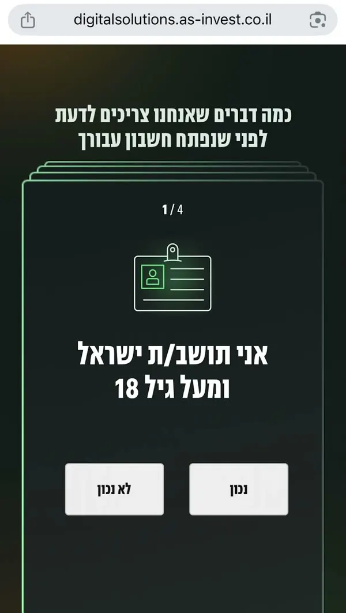
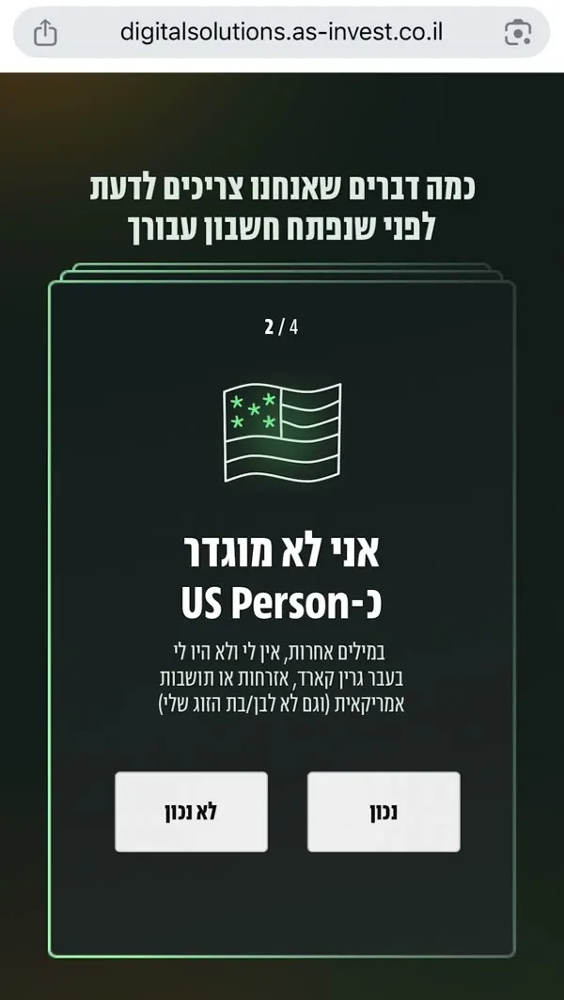
שלב 3: פרטים אישיים
תעודת זהות, שם בעברית ובאנגלית, מין, ארץ לידה, אימייל וכתובת מגורים.
בסוף העמוד יש מתג "אני רוצה לקבל דיווחים תקופתיים ומסמכים ישירות למייל". תשאיר אותו דלוק. אם תכבה אותו, הדיווחים יישלחו אליך בדואר ישראל הביתה, ואין לזה שום סיבה.
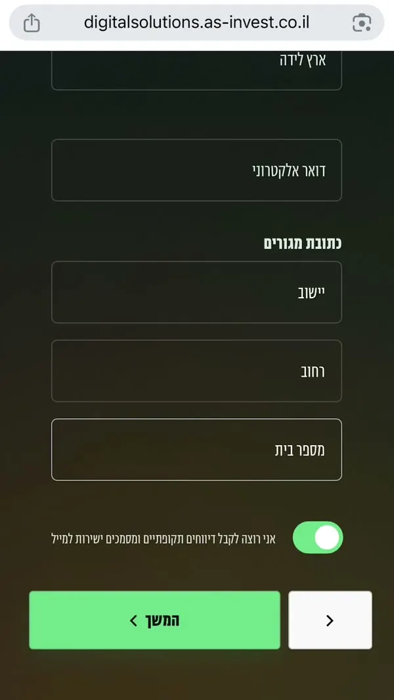
שלב 4: שאלות היכרות
עכשיו מגיעה סדרה של שאלות שנועדו בעיקר כדי שבית ההשקעות יכיר אותך: סטטוס תעסוקתי, גובה ההכנסה החודשית ועוד. אין פה תשובה נכונה או לא נכונה. תענה בכנות ותמשיך, לא צריך להיתקע על כל שאלה.
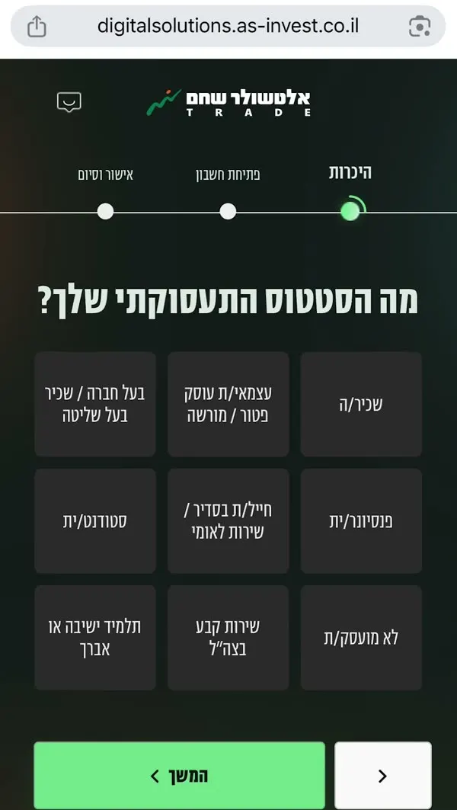
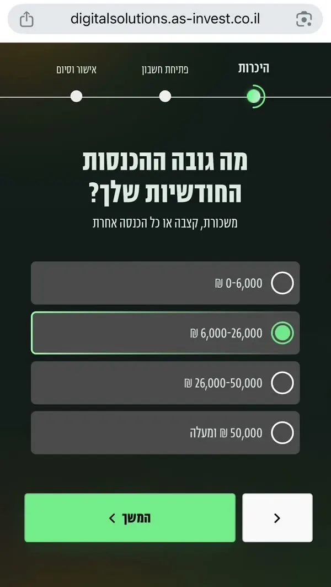
שאלות כלליות
- חשבונות נוספים של בני משפחה באלטשולר שחם טרייד - אם יש, תתבקש להזין גם את הפרטים שלהם.
- איש ציבור בחמש השנים האחרונות - אתה או בן משפחה שגר איתך או שאתם תלויים כלכלית זה בזה. ליד השאלה יש הסבר מה נחשב תפקיד ציבורי בכיר. לרוב האנשים התשובה היא לא.
- סירוב לקבלת שירותים מבנק - לרוב האנשים התשובה היא לא.
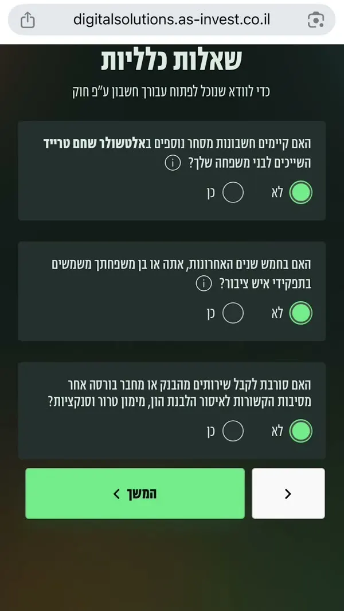
תזכורת: אני לא יועץ פיננסי. זאת דעתי בלבד, וזאת איננה המלצה לפעולה.
שלב 5: מטרת החשבון, הפקדות ומשיכות
מה מטרת פתיחת החשבון? מסמנים "מסחר בני"ע" - ניירות ערך. זה שם כללי שכולל מניות, אג"ח וקרנות סל. האפשרויות האחרות ברשימה (אופציות, מכירה בחסר, מסגרת אשראי) הן פעולות מורכבות יותר, ומי שמתכנן השקעה פסיבית בקרנות סל לא צריך אותן.
הפקדות ומשיכות - מאיפה יגיע הכסף, באיזו תדירות ובאיזה סכום, וכמה פעמים אתה צופה למשוך. גם כאן אלה שאלות היכרות. תענה לפי ההערכה שלך, בלי להתעכב על מספרים מדויקים.
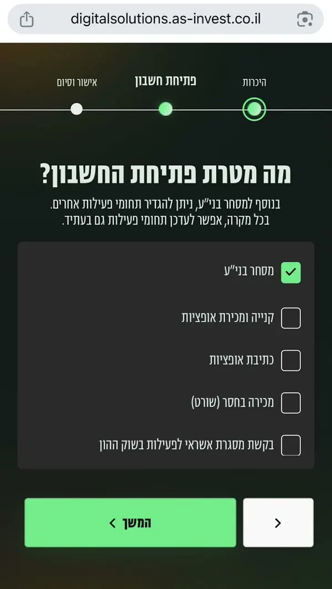
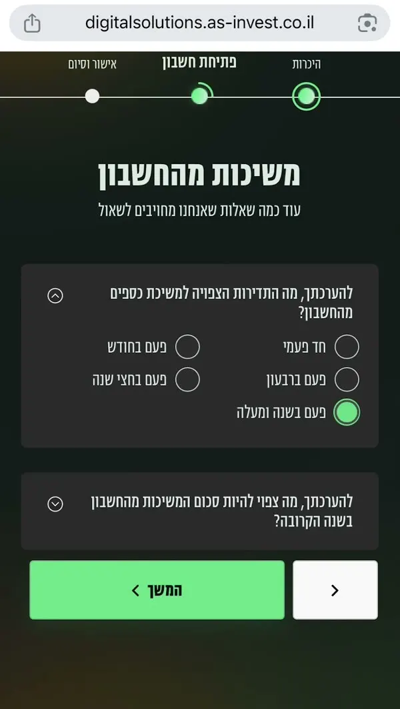
שלב 6: כתבי הצבעה - השאלה שמבלבלת את כולם
כשקונים מניה, הופכים לאחד מהבעלים של החברה. כתבי הצבעה מאפשרים לך כבעלים להשתתף בהחלטות של החברה ולהצביע באסיפות.
אני בוחר שלא לקבל אותם. ההשפעה של משקיע פרטי עם כמה יחידות היא אפסית, וזה בעיקר ממלא את המייל בהודעות שלא רלוונטיות אליי. זו העדפה אישית שלי.
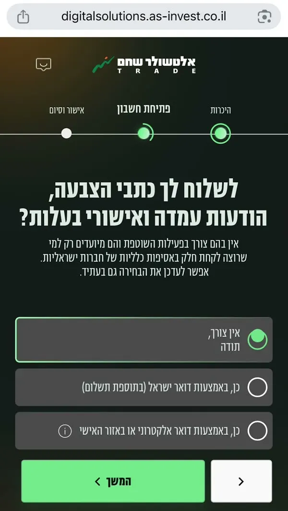
שלב 7: הצהרת נהנים וקוד אישי
הצהרת נהנים אומרת מי נהנה מהכסף בחשבון. אם החשבון רק שלך, מסמנים שאין נהנים נוספים ומאשרים שאתה היחיד שמשתמש בו. אם יש נהנה נוסף, תצטרך להזין גם את הפרטים שלו. בהמשך התהליך מקליטים את ההצהרה הזאת בקול.
אחר כך בוחרים קוד אישי. תשמור אותו - תצטרך אותו כשתדבר עם שירות הלקוחות.
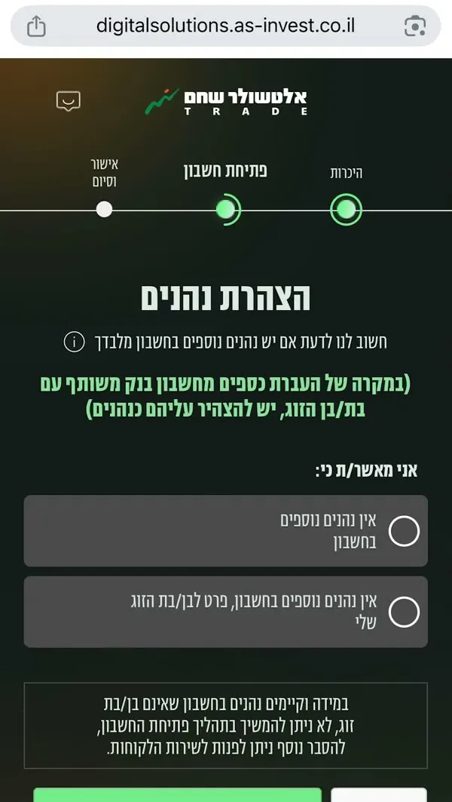
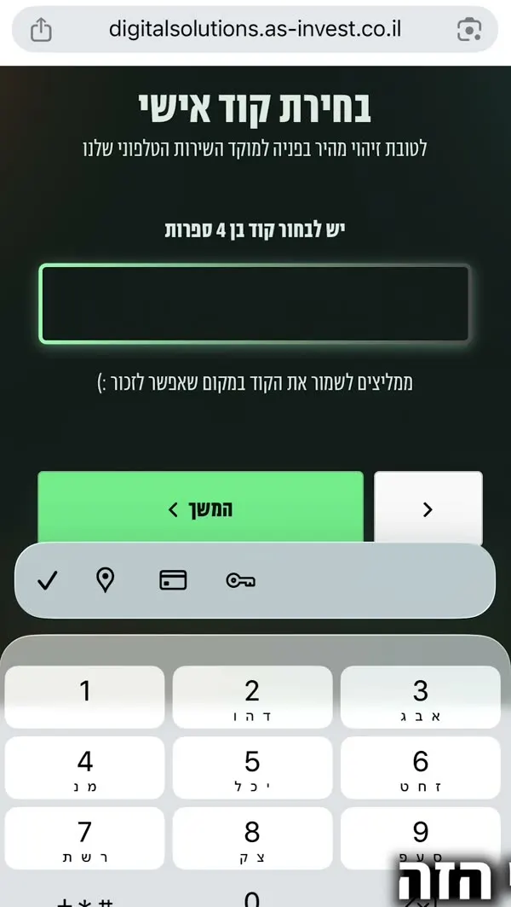
שלב 8: זיהוי דיגיטלי
זה השלב שבו הכי הרבה אנשים נתקעים, ובגללו אמרתי להכין הכל מראש. הוא כולל שלושה חלקים:
- צילום תעודת זהות או רישיון נהיגה משני הצדדים. מאשרים למצלמה בדפדפן ועוקבים אחרי ההוראות.
- סלפי - הפנים במרכז המסגרת, עד שהיא נצבעת בירוק.
- הקלטת הצהרת הנהנים - אומרים בקול משפט קצר, למשל "אין נהנים בחשבון פרט אליי".
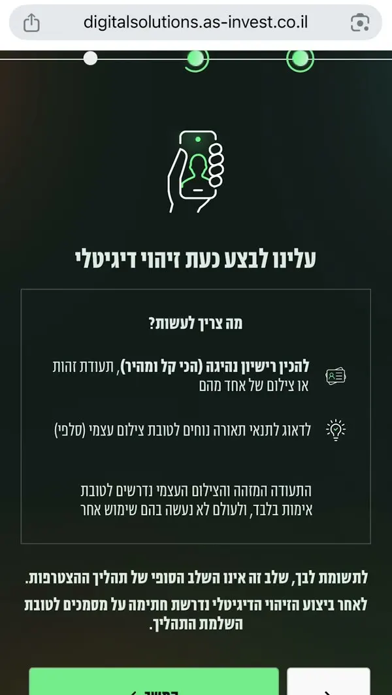
שלב 9: חשבון בנק וחתימה
מזינים את פרטי חשבון הבנק שלך וממשיכים. בסוף מופיעים המסמכים לחתימה: הסכם פתיחת חשבון, הצהרת הנהנים ואישור הודעות שיווקיות (לא חובה לאשר). לוחצים לחתימה, מאשרים, וזהו - החשבון נפתח.
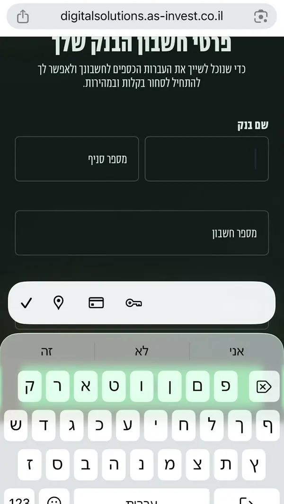
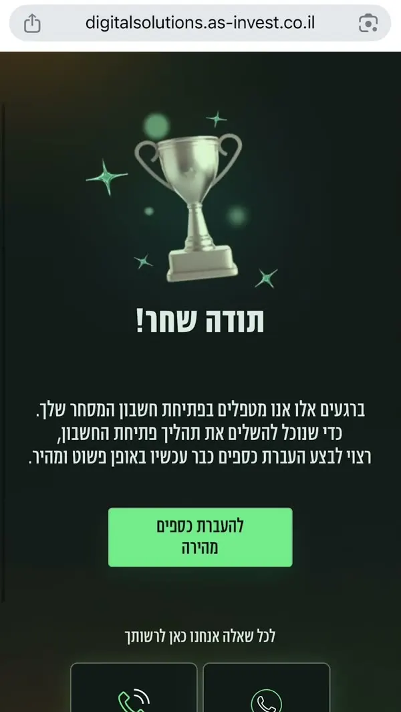
שלב 10: העברת הכסף - כבר עכשיו
במסך הסיום מופיעים פרטי חשבון הבנק של אלטשולר שחם טרייד ואפשרות להעברת כספים מהירה. אני ממליץ לעשות את ההעברה הראשונה כבר עכשיו, דרך האפשרות המהירה. בהמשך תוכל להעביר כסף גם לפי פרטי החשבון שמופיעים באפליקציה.
כל עוד לא העברת כסף, לא תקבל שם משתמש וסיסמה. כנראה גם יתקשרו אליך לשאול למה עוד לא העברת. לכן כדאי לא לדחות את זה.
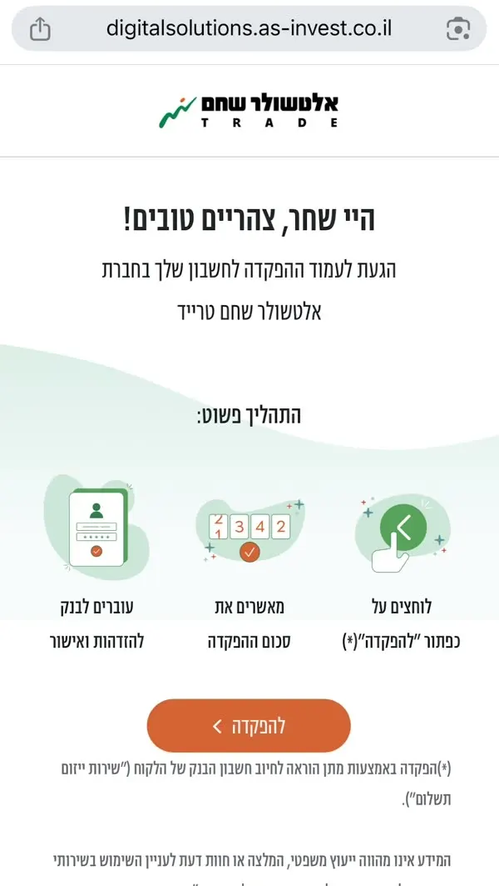
מה קורה אחרי ההרשמה?
מכאן זה עניין של המתנה. לפי הניסיון שלי, זה לוקח בין כמה ימים לשבוע.
- קודם מגיעה הודעת SMS מאלטשולר שחם שהחשבון נפתח והכל עבר בהצלחה.
- אחריה מגיעה הודעה נוספת עם שם משתמש וסיסמה זמנית למערכת המסחר.
- רק כשהגיעה ההודעה השנייה, החשבון מוכן ואפשר להיכנס.
הדגשים החשובים בקצרה
- תקדיש לזה 10-15 דקות רצופות, בבית, עם תעודת זהות או רישיון נהיגה.
- שאלות הסף (תושבות, US Person, תושבות מס, שימוש פרטי) - לענות בדיוק.
- שאלות ההיכרות - לענות בכנות ולהתקדם בלי להיתקע.
- להשאיר דיווחים למייל דלוק.
- לשמור את הקוד האישי.
- להעביר את הכסף באותו יום.
מסכי ההרשמה עשויים להשתנות מעט עם הזמן, אבל העיקרון נשאר זהה.
אני לא יועץ פיננסי. זאת דעתי בלבד, וזאת איננה המלצה לפעולה. הכתבה נועדה למידע כללי ואינה ייעוץ השקעות אישי.
מוכן? הקישור לפתיחת חשבון מסחר עצמאי באלטשולר שחם טרייד:
לפתיחת חשבון מסחר עצמאיגילוי נאות: זהו קישור שותפים. אני מקבל תגמול על פתיחת חשבון דרך הקישור הזה. ההצעה כפופה לתנאי החברה ולמסמכי החשבון.